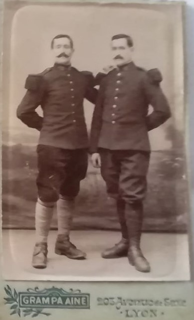
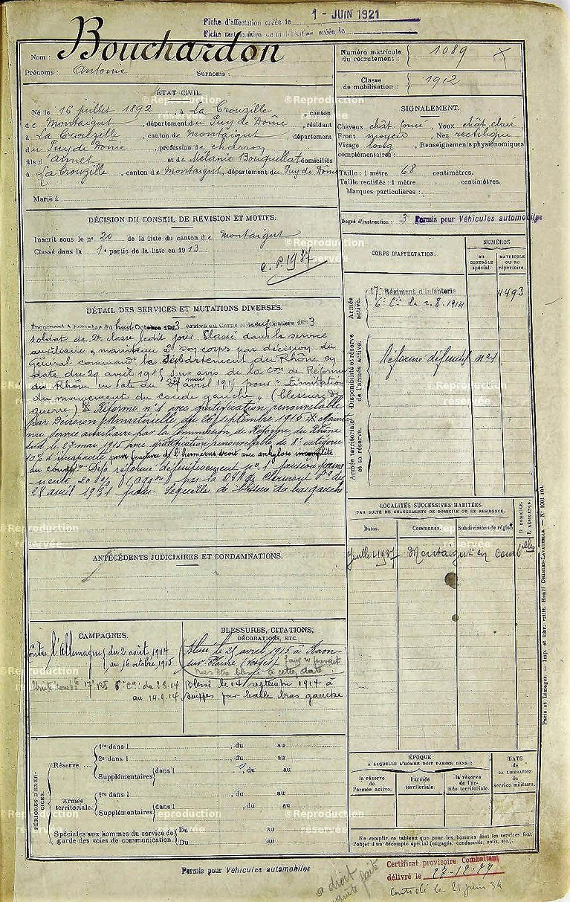

Auguste et Antoine (à gauche)

Livret militaire d'Antoine
Antoine
Frère jumeau d’Auguste, Antoine est né le 16 Juillet 1892 au hameau des Raynauds, commune de la Crouzille. Antoine est le parrain de Léa. Il sera blessé au début du conflit et sa blessure sera suffisamment sérieuse
pour lui éviter de retourner au front.
Comme Auguste, il part au service militaire le 8 Octobre 1913 pour rejoindre le 17ème Régiment d’infanterie basé à Epinal, en tant que soldat de 2ème classe. Il reçoit sa première instruction militaire au camp de
Valdohon.
Son régiment entre tôt dans la bataille des frontières et il sera aux côtés d’Auguste jusqu’au 26 Août, date à laquelle celui-ci est évacué. D’une certaine façon, Antoine se retrouve seul dans la bataille, sans son
frère jumeau.
Antoine est blessé par balle au bras gauche le 14 Septembre 1914, à proximité de Suippes lors de la bataille de la Marne. Le Journal de Marche du régiment fait état de lourdes pertes pour cette
journée ( 80 morts et 200 blessés ).
Il est évacué sur Lyon, début Octobre. On lui retire la balle le 31 Octobre et il séjourne à l’hôpital temporaire de la Brasserie du Parc, dans le quartier des Brotteaux. Pendant les mois qui suivent, Auguste étant
également en convalescence à Lyon, les deux jumeaux auront l’opportunité de se retrouver à plusieurs reprises.
En Avril 1915, Antoine passe officiellement dans le service auxiliaire et reste basé à Lyon. Bien qu’il souhaiterait revenir au pays pour aider aux travaux des champs, il n’a guère le choix et rentre à l’usine
Berliet de Monplaisir à partir de Septembre. Cette usine produit des camions et Antoine travaille le bois, un métier qu’il connaît bien ayant été en apprentissage chez un charron à Marcillat avant la guerre.
Il reste à Lyon jusqu’au début de l’année 1917, puis revient au hameau des Raynauds. Après la guerre, Antoine quittera la ferme pour exercer son métier de charron.